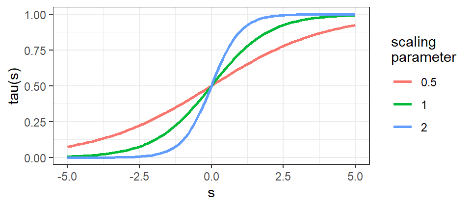

We’ve seen how adding parameters to the simple kappa models leads to more general t-a-p models. Adding more parameters is possible to generate details that are hidden by averaging. The Cohen Kappa is an old example of this, where each rater has a different \(p\) probability of guessing correctly.
This idea can be expanded, for example to simultaneously estimate the accuracy of each rater and classification of subject individually. Such models are sometimes called hierarchical or random effects models or fixed effects models, depending on the research tradition. (As noted in @agresti2003categorical, p. 523 and @gelman2006data, p. 245, fixed versus random effects are not good descriptions for Bayesian models.) What these larger models have in common is that they allow for complex relationships of average and individual parameters, for example having a grand average accuracy parameter \(a\) in addition to individual accuracy parameters \(a_j\) for each rater \(j\). In a Bayesian context, we can do “partial pooling” by allowing the scale (standard deviation) of the \(a_j\) parameters to be estimated from the data, rather than fixed at a constant value. This allows the model to estimate the degree to which the raters are similar to each other, and to the grand average, which can increase likelihood, producing better model fit.
Individual rater parameters and subject truth values are of interest in many contexts. In educational psychology, we might want to know how well a teacher is able to assess student learning, and how well the students demonstrate knowledge or skill. In medical research, we might want to know how well a doctor is able to diagnose a disease, and how well the patients are responding to treatment. In machine learning, we may be concerned with the quality of training data drawn from human classifications. The ratings of consumer products on sites like Amazon or Yelp can be polluted with unfaithful reviews, so some means of detection is valuable.
Allowing for each rater to have an accuracy parameter is straightforward, but the truth value of each subject is more complicated. For concreteness, consider a model where each subject has a true classification \(T_i\) of Class 1 or Class 0, and each rater has an accuracy parameter \(a_j\). Finally, suppose the \(p\) “guessing” parameter is treated as a nuisanse coefficient with a fixed scalar \(p\). Using the tree diagram, we can write the conditional probabilities for each rating of Class 1 as \(Pr[C_{ij} = 1] = T_ia_j + \bar{a_j}p\) and hence \(Pr[C_{ij} = 0] = 1 - T_ia_j - \bar{a_j}p\). For independent observations, the log likelihood function can then be updated by summing over
\[
L = -\sum_{i,j} \left[ C_{ij}\log(T_ia_j + \bar{a_j}p) + \bar{C_{ij}}\log(1 - T_ia_j - \bar{a_j}p) \right]
\]In the notation, capital letters are used for binary variables and lower case for scalars, which are usually in \([0,1]\). The \(C_{ij}\) values are the observations (the data from the ratings), so that only one of the summands in the expression will be non-zero at a time, depending on whether the rating was Class 1 or Class 0. The \(T_i\) values are the unknown true classifications, which can only be 1 or 0, for Class 1 or Class 0.
2 Binary Truth
So far we have treated truth as a metaphysical property of each subject: we’ve assumed an unknown true classification for each subject. This assumption makes the general t-a-p model easy to analyze by using binomial mixtures because we only need to estimate the fraction of true Class 1 cases.
In the derivation of the t-a-p model we used \(T_i\) to denote the true binary classification of subject \(i\), and \(t\) to denote the proportion of subjects that are Class 1. The \(t\) parameter became the mixture weight (a scalar) in the binomial mixture model. This presented no computational challenges, because each of the three parameters is a scalar in \([0,1]\), and the likelihood function is differentiable.
To estimate individual rater accuracy using metaphysical truth, we have to deal with binary values in the function, which means it cannot be differentiated. This is a problem for many optimization algorithms, which require smoothness to find a maximum value. One work-around is to use a threshold function, as is used in logistic regression, neural nets, and so forth. This corresponds to the idea from psychological measurement, where a “latent” variable is allowed to have real values, usually with a normal distribution centered at zero, but the value is not directly observed or measured. For example, we might imagine that college students have an abstract trait of “writing ability” that is approximately normally distributed over the universe of students. We then convert from the latent scale to an approximation of a discrete one by applying a threshold function \(\tau\) like the logistic function. For example, \(\tau(s) = 1/(1+e^{-cs})\) has the property that \(\tau(0) = 1/2\) , \(\tau(s) \rightarrow 0\) as \(s \rightarrow -\infty\) and \(\tau(s) \rightarrow 1\) as \(s \rightarrow \infty\). The steepness of the transition from zero to one (the thresholding) can be adjusted via the parameter \(c\), which can be used in conjunction with the scale (standard deviation) of the distribution used as a prior for the latent variable in a Bayesian analysis.
Code
#' plot the logistic function from [-5,5] with three different thresholding constantsdf <-expand.grid(x =seq(-5,5,.1), c =c(1,2,.5)) |>mutate(y =1/(1+exp(-c*x)))df |>ggplot(aes(x = x, y = y, color =as.factor(c))) +geom_line(linewidth =1) +theme_bw() +xlab("s") +ylab("tau(s)") +scale_color_discrete(name ="c")

Figure 1: The logistic function, \(\tau(s) = 1/(1+e^{-cs})\), with \(c = 1, 2, .5\).
Use of the threshold function (sometimes called a sigma function because it looks like an S) with a restrictive prior distribution constrains the domain of the latent variables for computational efficiency. This arrangement allows the truth parameters to remain real values, and the log likelihood function to be differentiable, but it approximates a discrete truth value because applying the transformation forces the values toward zero or one. The modification to the likelihood function is straightforward.
This approach is similar to item response theory or Rasche models. One advantage is that it’s straightforward to include predictor variables in the model, for example to estimate the effect of a rater’s experience (e.g. age, number of ratings) on their accuracy.
An alternative approach is the Expectation-Maximization (EM) algorithm, which is a general method for estimating parameters in models with latent variables. The EM algorithm is a two-step process, where the E-step computes the expected value of the latent variables given the current parameter estimates, and the M-step updates the parameter estimates given the expected values of the latent variables. The EM algorithm is guaranteed to converge to a local maximum of the likelihood function, but it is not guaranteed to find the global maximum. In practice, I have not found the EM algorithm to give good results unless the binomial distributions are widely separated in the mixture (e.g. \(a > .5\)).
3 Probability Instead of Truth
An alternative truth model is useful for hierarchical models, where we assume merely that each subject has a probability of being in Class 1, rather than a cryptic truth value. Here we imagine that each subject’s ratings for proficient raters is itself a binomial mixture with mixing parameter \(t\). This is like embedding the whole t-a-p model within each subject, and the combined likelihood function is a binomial mixture that possibly has unique contributions from each subject (if they all have unique true probabilities \(t_i\)). The log-likelihood function becomes
Where \(t_i \epsilon [0,1]\) is a unit scalar probability that subject \(i\) is Class 1. Although the notation change is minor, this version of the model has significant differences from the discrete truth model. In the binary truth t-a-p model, each subject’s ratings will have a binomial distribution of the number of class 1 ratings assigned by raters. That distribution will be one of two types, which are summed with the weights \(t\) (for true Class 1 cases) and \(\bar{t}\) (for true Class 0 cases). This creates a binomial mixture distribution as we have seen, one binomial for each of the true class types, combined by the frequency of each.
If instead of binary truth for each subject, we switch to a probability \(t \epsilon [0,1]\), each rater’s classification is a combination of the possibilities that the subject is truly Class 1 or Class 0. Consider an example where the \(t\) scalar is .5 for each subject, indicating that the subjects are half Class 1, but we don’t know which half. The probability of a rater assigning Class 1 is \(t_ia + \bar{a}p\) instead of \(T_ia_j + \bar{a_j}p\) in the discrete case. The difference is that the accuracy rating is applied partially instead of fully or not at all. For binary truth, it is the \(T_ia\) term that creates the mixture of two binomial distributions, and the difference in means between them is \(a\). With probabilistic truth, there is one binomial distribution for each value of \(t_i\), and the absolute difference in means between subject 1 and subject 2 is \(|t_1 - t_2|a\), for constant \(a\) and \(p\) parameters. If all the subjects have the same truth probability, there’s not a mixture at all, just a single binomial distribution of Class 1 ratings.
This case is somewhat like using the threshold function \(\tau(s)\) with a small \(c\) parameter that creates a gradual slope threshold. Following this idea, we could let the \(c\) parameter itself be fitted as part of the MCMC estimation process. In my limited attempts with this idea, there has not been enough selective pressure on the parameter to matter.
4 A EM Approach
The expression \(ta + \bar{a}p\) in the likelihood function will be maximized when \(t=1\), whether or not a threshold function is used. The nature of the t-a-p model therefore prefers discrete truth values. This suggests an EM type approach where we:
E step. Compute the individual \(t_i\) truth parameters using the probabilistic approach, then round them to 0 or 1.
M step. Compute the new fixed effects using the rounded random effects.
Repeat until convergence.
I have not yet tried this.
5 Model Notation
It’s useful to have compact notation to describe the choices for parametrization, and I’ll use the following convention. The t-a-p model has three average parameters with metaphysical truth. The indexed model in the previous section, where truth is probabilistic, can be denoted as \(t_i\)-\(a_j\)-\(p\), where \(i\) indexes subjects and \(j\) indexes raters. Extending that model to include partial pooling for the truth parameters can be written \(t + t_i\)-\(a_j\)-\(p\), to denote the addition of an average truth parameter \(t\). I’m assuming here that Bayesian estimation is used with hyperparameters for the scale of the \(t\) parameter.
There is an epistemological complexity in indexed \(t_*\)-\(a_*\)-\(p_*\) models that has practical implications. The three-parameter \(t\)-\(a\)-\(p\) model assumes that each subject \(i\) being observed has a true classification of Class 1 or Class 0 as indicated by the random variable \(T_i\). This is different from a model of the probability that a case is in Class 1. In the analysis so far, we’ve only dealt with expectations over a set of observations, so the distinction wasn’t apparent. But if we create individual parameters \(a_j\) for each rater, estimating those depends on true classifications of subjects existing, even if we cannot know what they are. Not all computational methods for estimating the parameters are well-suited to enforce the discrete constraint that \(t_i \epsilon \{0,1\}\) for each subject \(i\). One work-around is to average out (marginalize) truth values over the ratings for a subject. That idea is outlined in @stanuser, section 1.10 and implemented in several algorithms found in @carpenter2008multilevel. Another approach is to use a threshold function to map a continuous latent variable to a discrete truth value.
One consideration for a \(t_*\)-\(a_*\)-\(p_*\) model is that we must decide what model relationship there is between the \(a_*\) and \(p_*\) parameters. The three main options are (1) leave \(p\) a global average and don’t estimate indexed parameters for it, (2) assign \(p_j\) for each rater, or (3) assign \(p_i\) for each subject. The second option is a Cohen kappa approach. Generally this option will have identifiability problems for unbalanced data. To see that, consider \(c_{ij} = T_i a_j + \bar{a_j}p_j\) when \(T_i = 0\). If this is the large majority of cases, then the same rating will be obtained from either low accuracy or high guess rates, and the model will not be able to distinguish between them (the kappa paradox situation). This is not the case for the third option, where the \(p_i\) parameters are assigned to subjects, not raters. In simulations across a range of conditions, the third option performed best, but more work needs to be done on that.